Sean Loch
Biography
Sean Loch is an Australian contemporary painter whose evocative works explore the intersection of memory, emotion and the unconscious. Based in Brisbane, Sean came to painting after a successful career in film, seeking an artistic practice that offered complete creative freedom. One driven by instinct rather than expectation.
Working intuitively, Sean creates imagined worlds that sit between figuration and abstraction, where narrative remains deliberately open and emotion takes precedence over certainty. His paintings invite quiet contemplation, encouraging viewers to bring their own experiences and interpretations to each work. Music forms an integral part of his process, shaping the rhythm and atmosphere of every painting as it unfolds.
Driven by curiosity and a commitment to authentic expression, Sean's practice continues to evolve as an exploration of imagination, vulnerability and the profound emotional landscapes that exist beneath everyday experience.
With a Bachelor of Fine Arts in Film and Television, Sean has been making images since childhood, bringing a deeply cinematic sensibility to his compositions. His work has quickly attracted a dedicated collector base across Australia and the United States, with more than 80 paintings placed in private collections. He has exhibited at Art Fairs, and contemporary galleries before joining our roster of foundation artists.
Artist Statement
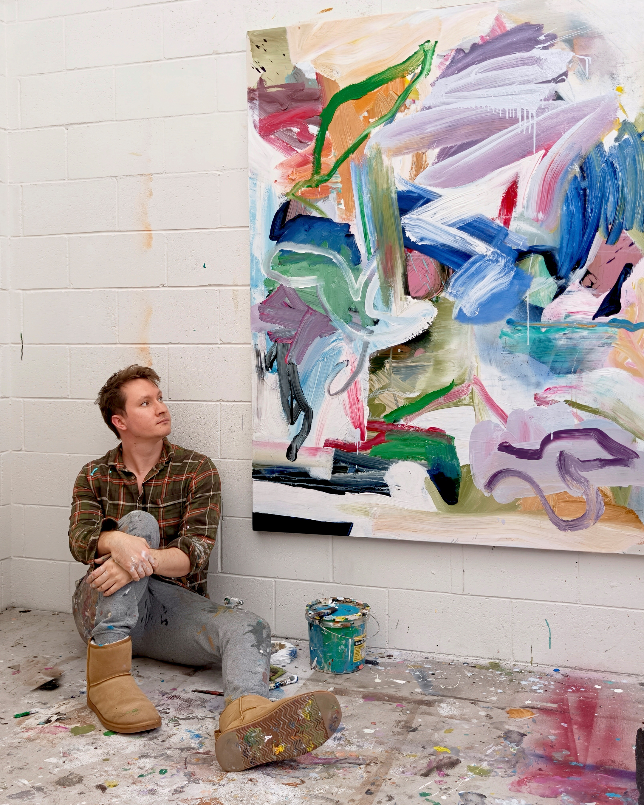

“I came to painting out of necessity. After years working in film, I wanted an art form I could pursue entirely on my own terms, free from budgets, permission and the influence of other people. Painting gave me that freedom.”
I paint to understand what I can't access any other way. Memory, emotion and lived experience often resist language, but through painting they begin to reveal themselves. Rather than illustrating ideas, I allow each work to emerge intuitively, trusting the process even when I don't know exactly where it is leading.
Music is an essential part of my practice. Every painting is created to a soundtrack that shapes its rhythm, energy and emotional tone. As the work develops, I try not to force an outcome. Instead, I follow instinct, allowing the painting to uncover something I didn't know was there.
Over time, I've come to see my paintings as journeys into the unconscious. The fictional worlds I create are not escapes from reality, but ways of understanding it more deeply. They are reflections of feeling rather than fact—spaces where ambiguity is welcomed and where viewers are invited to bring their own memories, questions and experiences.
For me, painting is an act of discovery. Every canvas offers the possibility of finding something unexpected, and it is that sense of curiosity, freedom and continual exploration that keeps me returning to the studio.
ORIGINAL ARTWORKS
Sort
Sort
Medium / Type
Size
Price
Date
Availability
Artist
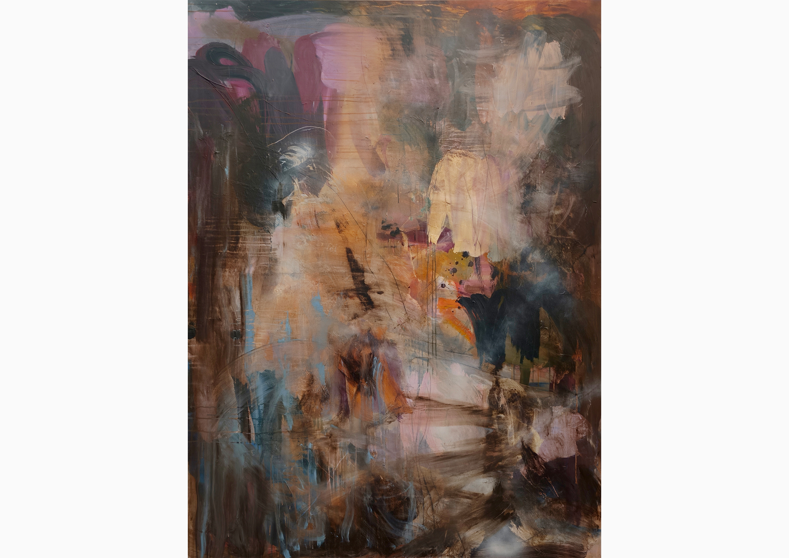
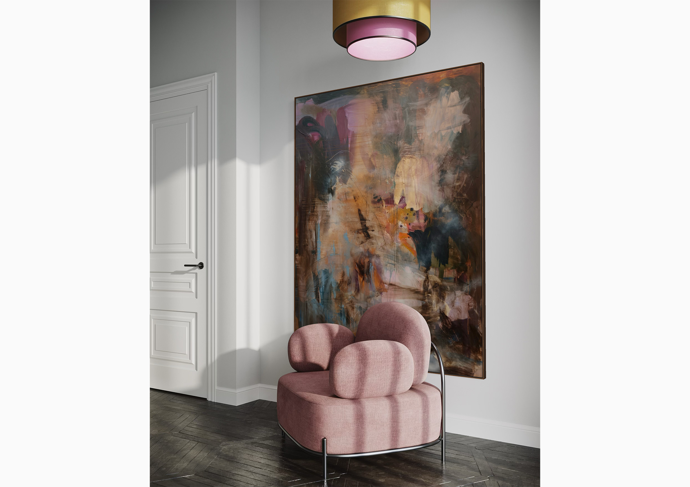
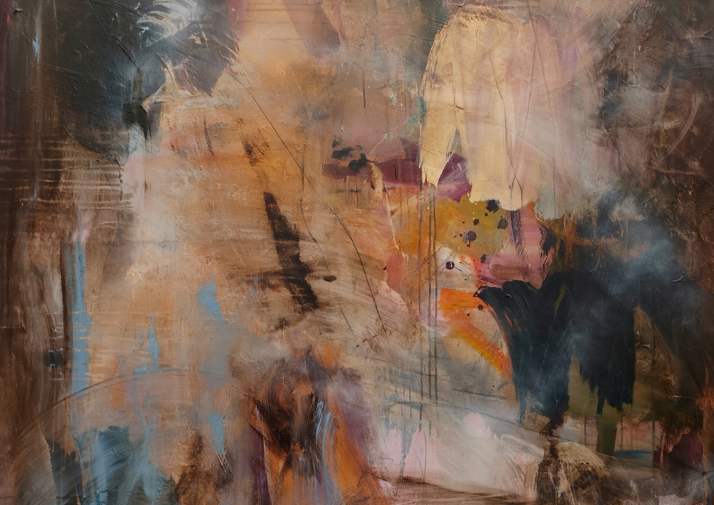
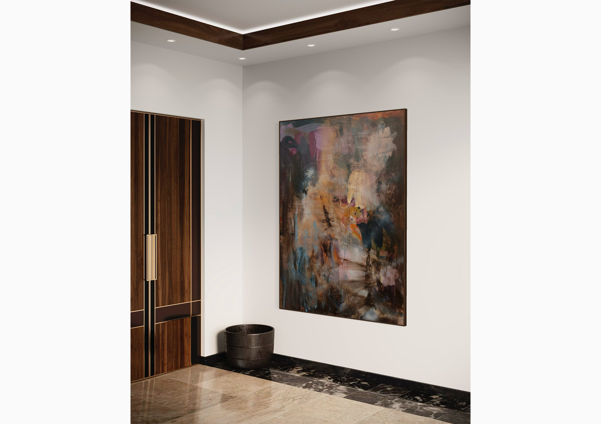
SOLO VOYAGE
Sean Loch
3500 AUD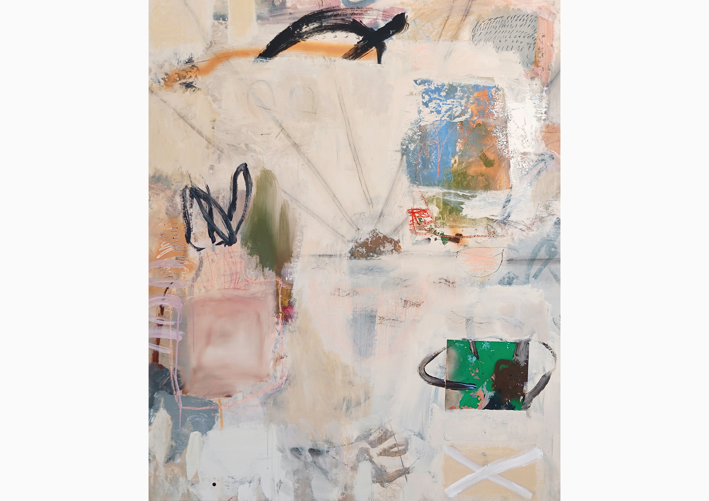
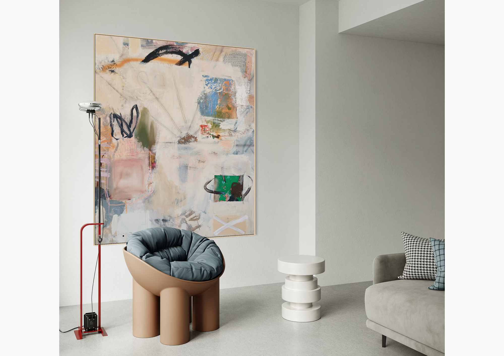
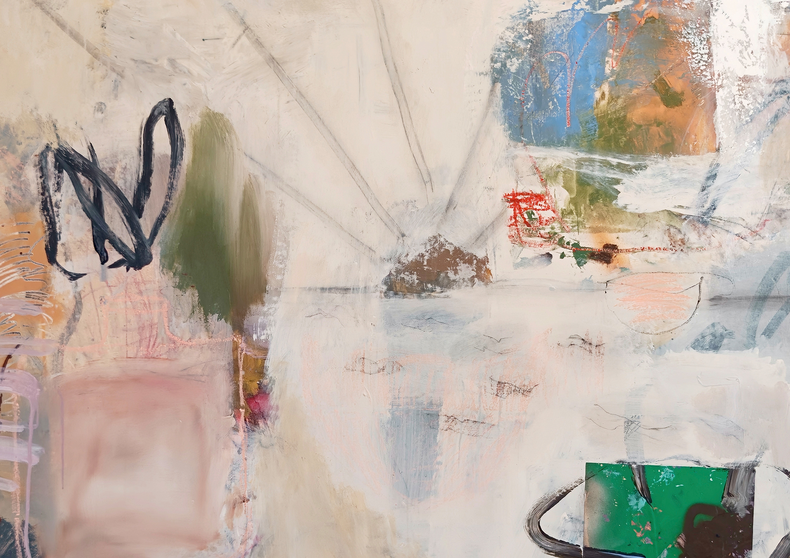
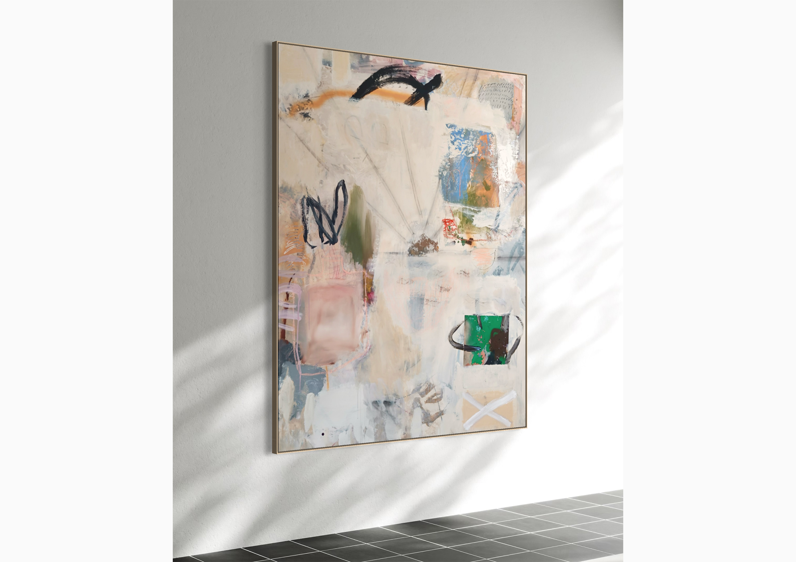
STAY A LITTLE LONGER
Sean Loch
3600 AUD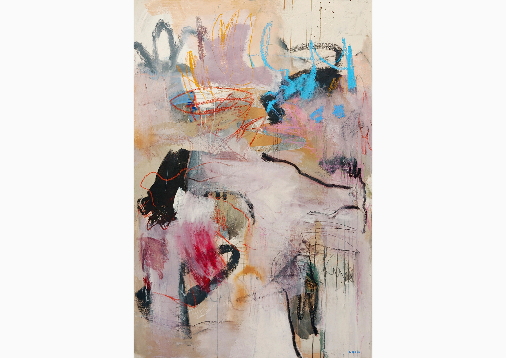
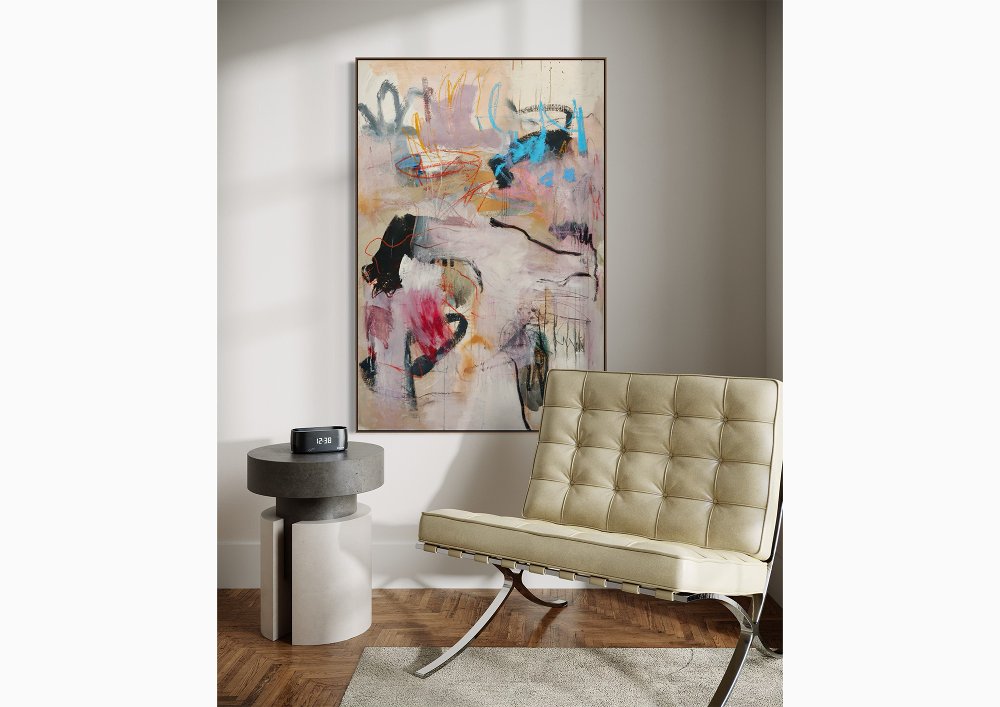
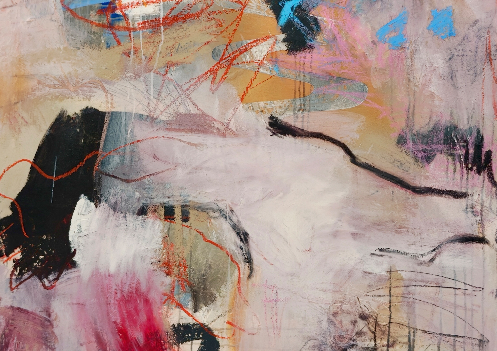
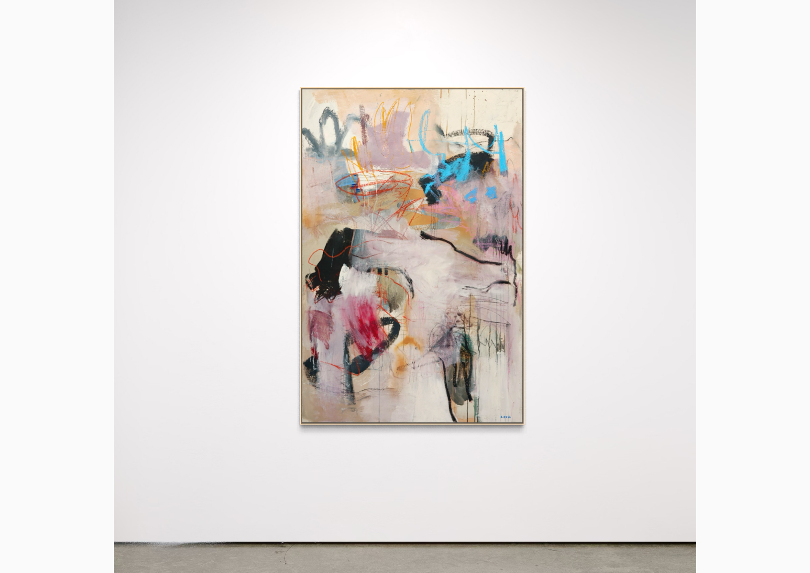
THE DEVIL TRIPPED AND WE LAUGHED
Sean Loch
2800 AUD


DOUBLE DARE
Sean Loch
3600 AUD